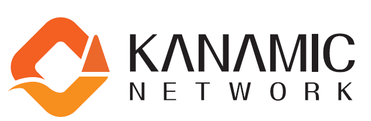
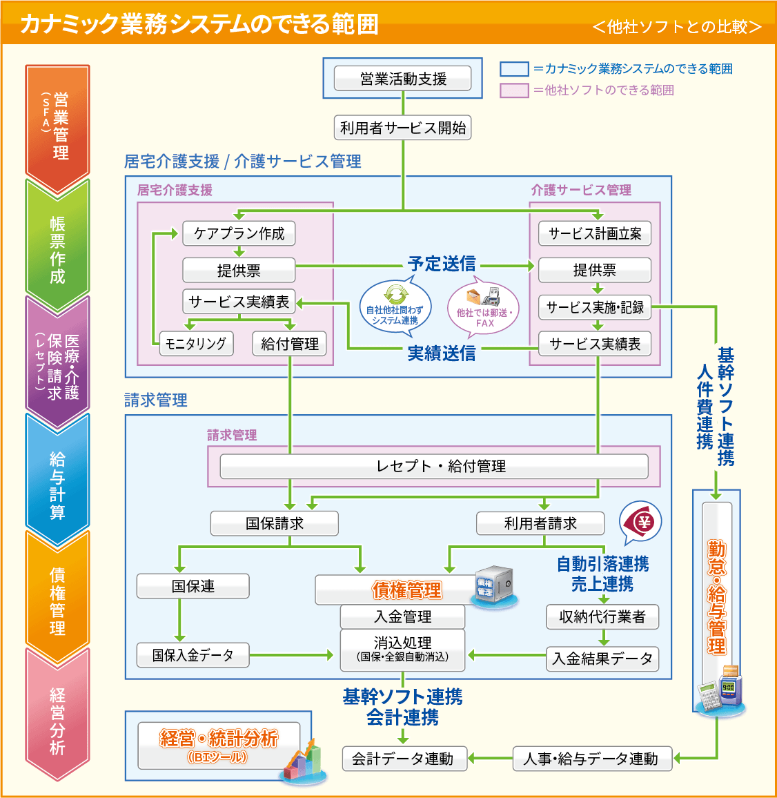
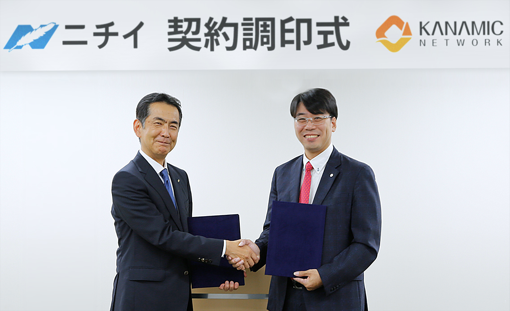
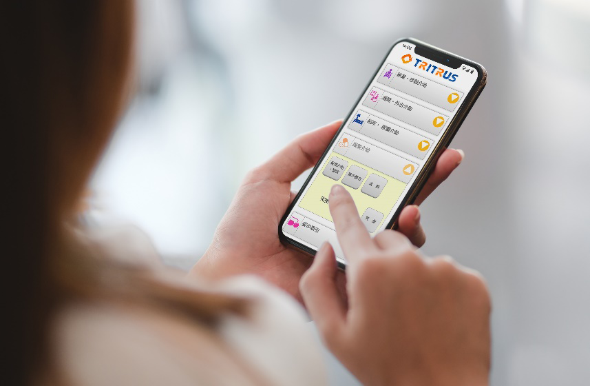

- 各位
- 2023年08月08日
会 社 名 株式会社カナミックネットワーク
代表者名 代表取締役社長 山本 拓真
(コード番号：3939 東証プライム市場)
介護業界大手ニチイホールディングスが介護システムとして
カナミッククラウドサービスを採用
株式会社カナミックネットワーク（本社：東京都渋谷区、代表取締役社長：山本拓真、以下「当社」）が提供するカナミッククラウドサービスが、株式会社ニチイホールディングス（本社：東京都千代田区、代表取締役社長：森信介、以下「ニチイホールディングス」）が、介護業務システムを刷新し、業務効率化、生産性向上を実現する為に「カナミッククラウドサービス」を子会社である株式会社ニチイ学館の介護拠点での採用を決定し、導入を開始しました。

導入の背景
ニチイホールディングスは、全国47都道府県で在宅系介護・居住系介護まで、お客様のニーズにあわせた「トータル介護サービス」を提供しており、介護事業所数・サービス数共に最介護業界大手のグループ企業となります。2000年の介護保険制度の開始当初よりオンプレミス型の独自介護システムを利用しておりましたが、業務の効率化、情報管理の一元化、リアルタイムな情報分析、他システムとの連携等の観点から、カナミッククラウドサービスを採用致しました。
システム採用のポイント
●コスト削減に寄与
クラウドサービスへの切り替えにより、サーバーの維持管理コスト、介護保険の法改正の対応等のシステム最新化のスピードや、システム更新する為のコスト削減を実現
●生産性の向上を実現
紙ベースでの帳票の作成、記録業務等から、スマホ活用による訪問介護記録（カナエルタッチ）利用による、生産性の向上を実現。紙運用からICTの活用へ。
●管理業務の効率化を実現
カナミッククラウドサービスにより、法人での顧客情報の一元管理、全国の拠点情報のリアルタイムでのデータ反映、データ分析等の迅速化。
●拡張性・柔軟性に優れた事業展開を実現
今後の社会情勢の変化への対応や、更なる事業の発展、事業成長に向けてカナミッククラウドサービスの拡張性、柔軟性により事業発展に寄与。
●セキュリティ対策、内部統制強化
カナミッククラウドサービスの高いセキュリティ標準機能の活用、並びスタッフ毎の権限設定により利用可能範囲をシステム内で設定することにより、利用範囲、閲覧範囲の権限設定等、セキュリティ対策や内部統制の強化を実現。

【調印式の風景】

ニチイホールディングスからのコメント
この度弊社は、導入実績が豊富なカナミッククラウドサービスを採用し、介護システムのクラウド化によって、今後の事業拡張性や迅速な法改正対応、ICT化による業務効率化等の生産性向上に一層取り組んでまいります。
カナミックネットワーク社は、弊社の今後の発展において強力なパートナーシップが築ける会社であると信頼とともに、期待を寄せております。
今後、カナミッククラウドサービスの活用により、より効率的な事業推進に取り組んで、両社でよりよい介護の未来を築いていくことにチャレンジをしてまいりたいと存じます。
株式会社ニチイホールディングス
代表取締役社長 森 信介
株式会社カナミックネットワーク様は、創業者である山本稔会長が介護保険制度立ち上げに貢献されるなど、介護分野に対する造詣も深く、山本拓真社長をはじめ、優れたエンジニアの皆様に、共に汗を流していただきました。
ご尽力いただきました皆様に、この場を借りて心より感謝申し上げます。
株式会社ニチイホールディングス
CIO 松田 裕弘
【カナミッククラウドサービス：活用イメージ図】

「カナミッククラウドサービス」について
超高齢社会に求められる「地域包括ケアシステム」の実現に寄与するために、地方自治体や医師会及び介護サービス事業者向けの多職種間連携を可能にする地域連携型クラウドサービス。多職種他法人間の連携を目的とした情報共有システムと、介護事業者向けの業務システムをラインナップしております。
以 上
本件に関するお問い合わせ先
株式会社カナミックネットワーク 管理部
所在地 〒150-6031 東京都渋谷区恵比寿4-20-3 恵比寿ガーデンプレイスタワー31階
ＴＥＬ 03-5798-3955
ＦＡＸ 03-5798-3951
問合せフォーム https://www.kanamic.net/form/request/input.jsp